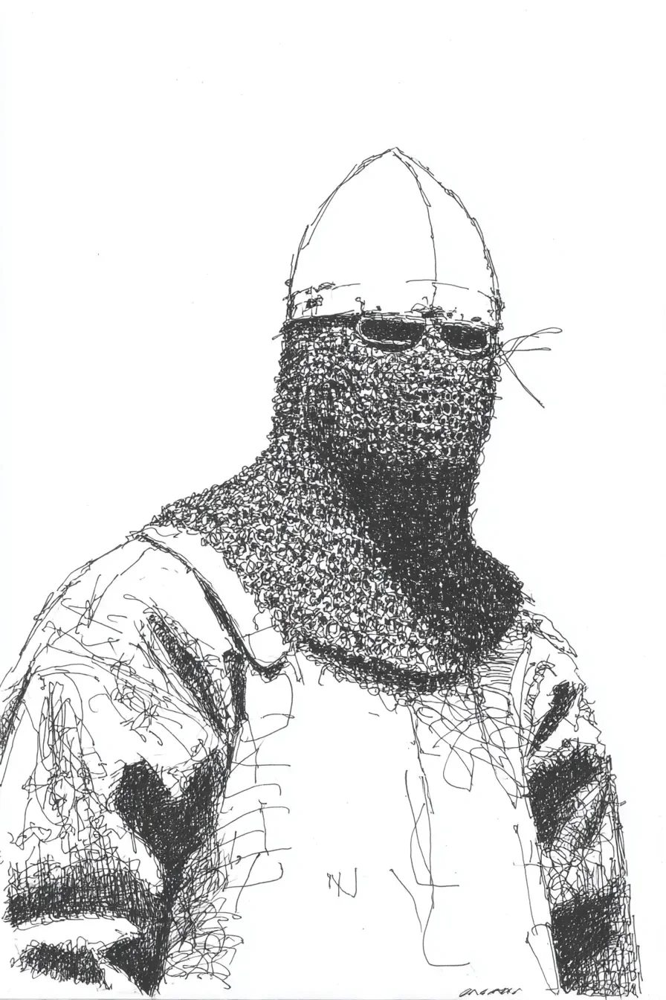

마을에 기사가 있었다.
[There was a knight in the village.]
기사는 매일 문 앞에 서 있었다.
[The knight stood at the gate every day.]
아무도 기사의 얼굴을 몰랐다.
[Nobody knew the knight’s face.]
아이들이 물었다. “왜 얼굴을 숨겨요?”
[Children asked. “Why do you hide your face?”]
기사는 대답하지 않았다.
[The knight didn’t answer.]
한 소년이 말했다. “무서운 얼굴이에요?”
[A boy said. “Is it a scary face?”]
기사는 고개를 저었다.
[The knight shook their head.]
한 소녀가 말했다. “슬픈 얼굴이에요?”
[A girl said. “Is it a sad face?”]
기사는 또 고개를 저었다.
[The knight shook their head again.]
아이들은 매일 왔다.
[The children came every day.]
그들은 기사에게 꽃을 주었다.
[They gave flowers to the knight.]
기사는 꽃을 받고 고개를 숙였다.
[The knight took the flowers and bowed.]
어느 날 도둑들이 왔다.
[One day, thieves came.]
도둑이 소리쳤다. “돈을 내놔라!”
[A thief shouted. “Give us money!”]
마을 사람들은 떨었다.
[The villagers trembled.]
기사가 앞으로 걸어갔다.
[The knight walked forward.]
도둑이 웃었다. “늙은 기사 하나? 비켜라!”
[The thief laughed. “One old knight? Get out of the way!”]
기사는 칼을 들었다.
[The knight raised a sword.]
싸움은 짧았다.
[The fight was short.]
도둑들은 도망갔다.
[The thieves ran away.]
사람들이 모였다.
[People gathered.]
한 남자가 말했다. “정말 고마워요.”
[A man said. “Thank you so much.”]
한 여자가 말했다. “이제 얼굴을 보여 주세요.”
[A woman said. “Please show us your face now.”]
소년이 말했다. “제발요!”
[The boy said. “Please!”]
소녀가 말했다. “우리는 친구예요.”
[The girl said. “We are friends.”]
기사는 천천히 투구를 벗었다.
[The knight slowly removed the helmet.]
모두 놀랐다.
[Everyone was surprised.]
기사는 할머니였다.
[The knight was a grandmother.]
소년이 말했다. “할머니예요!”
[The boy said. “It’s a grandmother!”]
소녀가 말했다. “우와, 멋있어요!”
[The girl said. “Wow, so cool!”]
할머니가 웃으며 말했다. “이 마을은 내 집이에요. 내 가족이에요.”
[The grandmother smiled and said. “This village is my home. My family.”]
사람들도 웃었다.
[The people smiled too.]
소녀가 물었다. “할머니, 저도 기사가 될 수 있어요?”
[The girl asked. “Grandmother, can I become a knight too?”]
할머니가 대답했다. “물론이지.”
[The grandmother answered. “Of course.”]